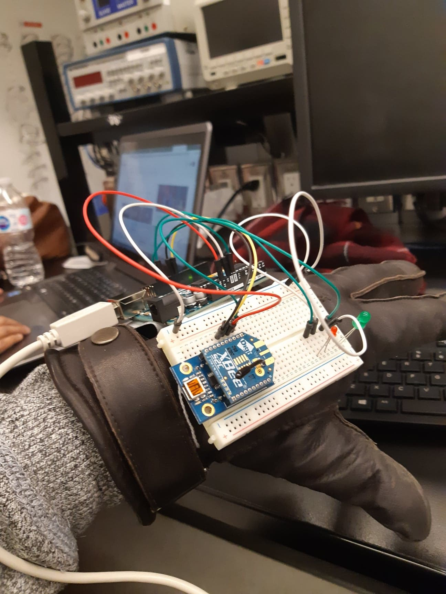
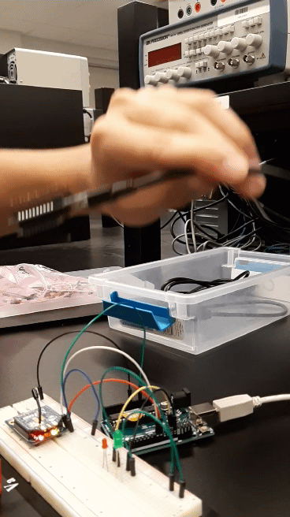
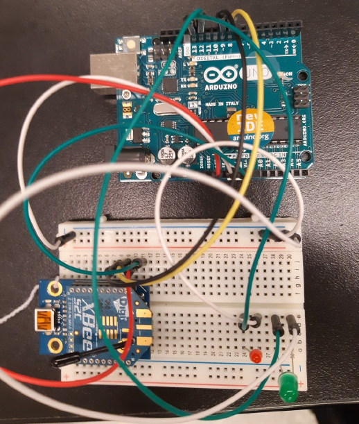

Here are my hardware projects done in University
Hand Posture Monitor

A posture monitor with LED indicators for good and bad posture

LED turns Red or Blue depending on distance from the other sensor
